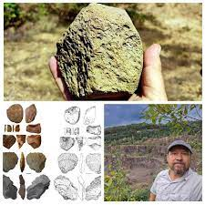

История Украины с древнейших времен до VI века
Древнейшие времена
Первые люди на землях современной Украины появились примерно миллион лет назад. Человекообразные существа, пришедшие из Юго-Западной Азии через Балканы и Кавказ, жили в скальных гротах и умело пользовались заостренными палками и каменными рубящими орудиями. Следы человеческого присутствия на будущих украинских территориях относятся ко всему раннему палеолиту, когда несколько раз чередовались глобальные похолодания и потепления, связанные с наступлениями и отступлениями ледников.
Поселение современных людей на Украине и в ее окрестностях датируется 32 000 годом до нашей эры, что свидетельствует о наличии граветтской культуры в Крымских горах. К 4500 г. до н. э. неолитическая Кукутенско-Трипольская культура процветала на обширных территориях современной Украины, включая Триполье и весь Днепровско-Днестровский регион. Украина также считается вероятным местом первого приручения лошади.
Древнейшие жители Украины. Первые земледельцы.
- Киммерийцы.
- Скифы.
- Античные колонии.
- Сарматы.
- Готы.
- Гунны.
Каменный век
В эпоху среднего палеолита, 150-100 тысяч лет назад, люди уже стали важной частью тогдашнего мира. Они научились добывать огонь, совершенствовали свои орудия и развивались сами. Не менее 40 тысяч лет назад в Европе появились современные Homo Sapiens–кроманьонцы, жившие охотой и рыболовством и умевшие строить настоящие жилища.
В последующие эпохи каменного века–в мезолите и неолите–культура и быт доисторических племен становились все разностороннее. В мезолите люди изобрели лук и стрелы и приручили собаку, в эпоху неолита возникли земледелие и скотоводство.
Медный век (IV-III тысячелетия до нашей эры) ознаменовался появлением между Карпатами и Днепром археологической культуры Кукутени-Триполье. Ее поселения считаются самыми большими в мире того времени.
Трипольцы были прекрасными гончарами, опытными земледельцами, имели развитую знаковую систему и знали принцип колеса, но постепенно деградировали и растворились среди других племен около 4 тысяч лет назад.
Бронзовый век
С началом бронзового века в степной и лесостепной зонах распространилась скотоводческая ямная культура, от которой сохранились древнейшие в Украине курганы. В III-II тысячелетиях до н.э. на Волыни, Подолье и Прикарпатье существовала культура шнуровой керамики, а в Причерноморье – родственная ей катакомбная культура, носители которой наладили натуральный обмен с племенами Кавказа.
Железный век
В бронзовом веке зародилось, а в железном окончательно закрепилось разделение племен на оседлых земледельцев и кочевых скотоводов. Первыми кочевниками и одновременно первым известным по имени народом на украинских землях стали киммерийцы. Им на смену в начале VII века до нашей эры в Северное Причерноморье пришли ираноязычные скифы – народ со сложной племенной и сословной иерархией, разделением труда, развитым коневодством и культом оружия. Скифское влияние простиралось далеко на север, вплоть до Полесья.
Параллельно с приходом скифов в Северном Причерноморье появились форпосты античной цивилизации – греческие колонии-полисы, первые настоящие города на территории Украины. Каждый полис был независимой республикой. В V веке до н.э. возникла и первая монархия – Боспорское царство на обоих берегах Керченского пролива, позднее покоренное Понтийским царством.
В III веке до н.э. место скифов в регионе заняли во многом схожие с ними родственные восточные соседи – сарматы. Сарматские племена языгов, роксоланов и аланов воевали и торговали не только с греческими поселенцами, но и с Римом.
В I веке до н.э. под контроль римлян, разгромивших Понтийское царство, перешло все черноморское побережье.
Наша эра
0-3 век нашей эры
В III веке н.э. между Доном и Дунаем появились пришедшие с севера готы. Они образовали мощный племенной союз, включавший, кроме основателей-германцев, также местные лесостепные и степные народы, говорившие на разных языках. Материальные следы этого союза – памятники земледельческой черняховской культуры, просуществовавшей до V века.
«Черняховцам» при всем их этническом и культурном разнообразии придавало общие черты влияние Римской империи. Этой «римской вуали» черняховская культура обязана своим высоким уровнем, в частности, развитием ремесел.
4-5 века нашей эры
В IV веке, с началом Великого переселения народов, в причерноморские степи из глубин Азии вторглись гунны, вытеснившие готов в отдаленные районы Крыма.
В середине V века основные силы гуннов двинулись дальше в Европу, а в Причерноморье остались их «младшие союзники» – пришедшие вместе с ними из Азии тюркские племена. Обезлюдевшую же после ухода гуннов лесостепь начали колонизировать переселенцы из северных лесов – ранние славяне.